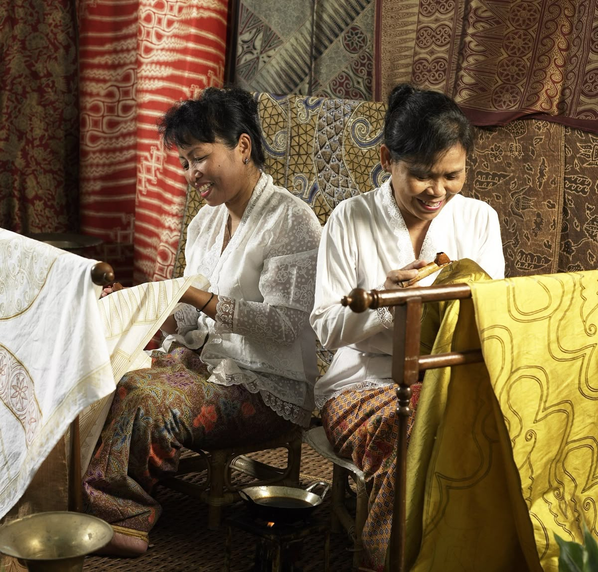

Cerita di balik setiap helai kain batik kami
Kain Batik Nusantara adalah usaha kerajinan batik yang berdiri sejak tahun 2005 di Surabaya, Jawa Timur. Kami didirikan oleh Eka Ahmad Ferdinand M, seorang pengrajin batik yang belajar langsung dari para empu batik di Solo dan Yogyakarta.
Kami hadir dengan misi yang sederhana namun mulia: menjaga batik tetap hidup dan relevan di tengah arus modernisasi, sambil memastikan para pengrajin tradisional mendapatkan penghidupan yang layak.
Tahun Pengalaman
Pengrajin Terlatih
Pelanggan Setia
Motif Koleksi

Menjadi pelopor pelestarian dan pengembangan batik tradisional Indonesia yang diakui secara nasional dan internasional, serta menjadi jembatan antara tradisi dan modernitas dalam dunia fashion dan kerajinan.
2005
Eka Ahmad Ferdinand M mendirikan Kain Batik Nusantara dengan modal awal dan 3 orang pengrajin dari komunitas batik lokal Surabaya.
2009
Tim berkembang menjadi 20 pengrajin terlatih. Memulai program pelatihan rutin untuk generasi muda penerus budaya batik.
2013
Meraih penghargaan UMKM Terbaik dari Kementerian Perindustrian RI atas kontribusi luar biasa dalam pelestarian budaya Indonesia.
2018
Produk Kain Batik Nusantara mulai diekspor ke Malaysia, Singapura, dan Belanda melalui pameran batik internasional di Amsterdam.
2025
Meluncurkan platform digital untuk memperluas jangkauan pasar ke seluruh Indonesia dan mancanegara.
Pendiri & Direktur
| Tahun | Nama Penghargaan | Pemberi | Kategori |
|---|---|---|---|
| 2013 | UMKM Terbaik Nasional | Kemenperin RI | Kerajinan Budaya |
| 2016 | Sertifikasi Batik Tulis Asli | Dewan Kerajinan Nasional | Autentisitas Produk |
| 2019 | Indonesia Heritage Award | Kemendikbud RI | Pelestarian Budaya |
| 2022 | Green Craft Certification | KLHK RI | Ramah Lingkungan |
| 2024 | Export Excellence Award | Kemendag RI | Ekspor Produk Budaya |